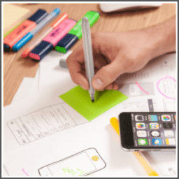

Graphic design is one of the most important aspects for businesses because graphics is something that catches our attention and attracts us towards products and brands.
Imagine, how would you feel when your newly purchased iPhone comes in a poorly designed, dull colored box? Not happy, right?
Quality graphics help to build the brand’s image into customer’s eyes, they create a long-lasting positive impression on people.
Due to the rise of the internet and technology, new businesses are spawning up every day that’s why the need for eye-catching graphics has become crucial to many businesses.
This is why there’s an ever growing demand for graphics designers.
You as a person who wants to make money online can leverage this opportunity to change your fortunes.
As a graphics designer, most of your jobs will include designing websites, logo, print headers, illustrations and product interfaces.
Artists, designers, painters.
1. Creativity and imagination.
2. An understanding of current trends and styles.
3. Ability to conceive and create designs.
4. Ability to convert designs into digital format using tools such as Photoshop.
5. Ability to manage your time, meet deadlines and work within budget.
You can find graphic design jobs by visiting following websites/URLs:
1. 99designs.com
(Exact URL - https://99designs.com/designers)
2. Graphicriver.net
(Exact URL - https://graphicriver.net/become-an-author)
3. Coroflot.com
(Exact URL - http://www.coroflot.com/apply-now)
4. Dribble.com
(Exact URL - https://dribbble.com/jobs?location=Anywhere)
5. Behance.net
(Exact URL - https://www.behance.net/joblist)
6. Designweek.co.uk
(Exact URL - https://jobs.designweek.co.uk/jobs/graphics)
7. Designjobsboard.com
As an entry level graphics designer, you can expect to earn $15-$35 per hour. Once you reach an intermediate level, you can expect to earn $35-$60 per hour.
You will make $65-$100+ per hour once you have lots of experience and positive reviews.